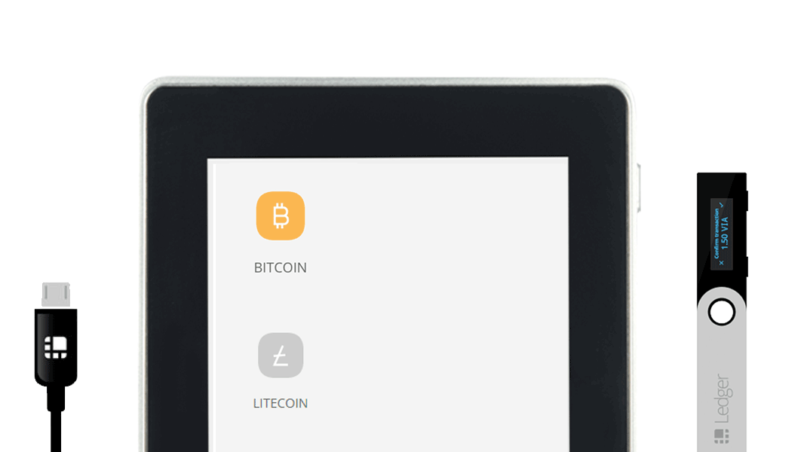

TEAM
Romano
Lead Developer

Reorder
Developer
Chainfailure
Developer
Frank Marrone
Developer
Mike V
Marketing Manager
CR-MN
Front-end DEV & Designer
Viacoin has Ledger Nano S and Ledger Blue support. By embedding the private keys on the chip Ledger provides the safest wallet solution known to the market.
Viacoin is an open source crypto-currency created in 2014, derived from the Bitcoin protocol that supports embedded consensus with an extended OP_RETURN of 120 byte. Viacoin has a total supply of 23 million coins with mining reward halving takes place every 6 months. with a transaction speed 25x faster than Bitcoin.
Other features include a mining difficulty adjustment algorithm called DarkGravityWave which was designed to address flaws like the Time warp attack in Kimoto Gravity Wave algorithm, Scrypt Auxpow and Versionbits to allow for 29 simultaneous Soft Fork changes to be implemented at a time. Several features can be deployed at the same time
Viacoin Whitepaper: Viacoin_whitepaper.pdf
Viacoin adopted SegWit. Segregated Witness helps to shrink the size of a transaction and cope with the UTXO growth. It also aims to increase the per-block transaction throughput by a factor of 2 or 3, while simultaneously making block syncing faster for new nodes.
Viacoin plans to use the Lighning Network.
This enables improvements of several orders of magnitude in transaction throughput by moving the majority of transactions outside the consensus ledgers into Payment channels. This allows millions to billions of transactions per second across the network. A capacity that blows away legacy payment rails.
Viacoin Merged mining aims to reuse the mining power of any other Scrypt coin to add security to the Viacoin blockchain, allowing a miner to mine for more than one blockchain at the same time. A miner could mine Viacoin and Litecoin or any other Scrypt coin together
Miners have an incentive to mine Viacoin even if the reward is low as they are able to mine any other Scrypt coin simultaneously Viacoin for “free”. As Viacoin mining isn’t driven by large block rewards, this allows Viacoin to have a lower rate of inflation compared to other cryptocurrencies that do not support merged mining.
Transitioning to a per-output model will avoid CPU overhead, lead to better predicable memory usage, use 10-20% less memory and this will result in re-indexing becoming much faster.
Allowing script validation to be skipped for ancestors of known-good blocks will lead to substantial performance increases.
Refactor code with focus on concurrency. Speed up block fetching several times.
Speeds up initial block download as UTXO lookups can be optimized, and there is no use for the mempool at that stage.
Increasing block propagation speed.
It is a more efficient algorithm than Elliptic Curve Digital Signatures. Schnorr signatures support “native multisig” which enables the aggregation of multiple signatures into a single one valid for the sum of the keys. /batch validation. It could reduce the use of storage & bandwidth by 25% or more.
Mast allows Viacoin transaction validation scripts to be stored in partially-hashed form and nodes to interact with the merkle tree. This enables complicated redemption conditions, improves privacy by hiding unexecuted branches & allows inclusion of non-consensus enforced data. MAST allows for complicated smart contracts to be created on the VIA blockchain without clogging it up.
Rootstock is a smart contract platform which has a two-way peg. The idea is to enable it to work with smart contracts. Rootstock runs a turing complete Virtual machine called Rootstock Virtual Machine (which is also compatible with Ethereum virtual machine!) and allows solidity compiled smart contracts to run.
~20x Speedup in creating a new wallet.
Very similar to ’Counterparty’ but there are some key differences. It does not issue an auxiliary coin (e.g Counterparty and Mastercoin). For creating tokens, viacoins itself need to be 'colored'.
Contains hardware acceleration for CRC on architectures supporting SSE 4.2. As a result, synchronization and block validation will be faster
The Lightning Network Daemon (lnd) - is a complete implementation of a Lightning Network node.
Zap is a Lightning Network wallet that helps users accomplish their goals with a great experience. Taking in complex protocol language and delivering a friendly interface where anyone can send and receive cheap and instant.
Currently for Bitcoin: zap.jackmallers.com.
Viacoin Core alternative implementation in Java.
A mobile Viacoin wallet for the streets. A modern viacoin wallet hand forged to keep your transactions private, your identity masked, and your funds secure
Currently for Bitcoin: samouraiwallet.com/.
Styx is an unlinkable anonymous atomic payment hub for Viacoin.
Read the whitepaper.